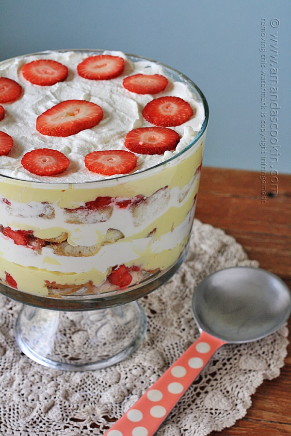

The Great British Trifle

English trifle has been a staple since the world began. Nothing brings a smile
to a true bexitist as seeing a 6 foot tall container of cake, custard and red berries.
So why not take the challenger and bring a little bit of Brexit to wherever you are!
General
- 4 cups whole milk
- 8 egg yolks
- 1/2 cup sugar
- 4 tablespoon cornstarch
- 1 1/2 teaspoon vanilla extract
- 1/2 cup butter
Cake layer
- 9x13 white or yellow cake, baked and cooled
- 1/2 cup cream sherry
- 3 heaping tablespoons of seedless red raspberry jam or preserves
For the fruit layer
- 2 cups sliced fresh strawberries
- 1 cup fresh raspberries
- 1 tablespoon cream sherry
- 1 tablespoon sugar
Whipped cream
- 1 1/2 cups heavy whipping cream
- 1 teaspoon powdered sugar
How to Make English Trifle
-
To make the custard begin by heating the milk in a saucepan.
You just want it to come to a simmer, you’ll see steam rising
from the surface as well. (If you are using Bird’s custard,
follow the preparation instructions on the canister for two pints.)
-
In a bowl, whisk the egg yolks together with the sugar and cornstarch.
It will be all lovely and yellow.
-
Next, you’ll temper the eggs (follow the instructions in the printable
version) and pour everything back into the saucepan to thicken. You
need to do it slowly so you don’t burn it, but custard can be finicky,
so you need to make sure it heats enough to bubble for several minutes.
Use a sturdy rubber spatula to stir the liquid and keep it from sticking
to the bottom of the pan. Remove from heat and whisk in vanilla. Let sit
for 5 minutes, then whisk in butter. Custard will be thick and smooth.
-
I quicken the cooling process by using an ice bath. Fill a large bowl with
ice and put the hot custard into a bowl that will fit into the larger bowl.
After that’s in there, add some water to the ice to make the ‘bath”. This
will chill the outside of the bowl that’s holding the custard, which will
help its contents to cool faster.
-
Because you are brushing the cake with sherry, you want the cake pieces
to be small enough to soak it up. I sliced my cake in half horizontally.
-
Place all those pieces cut-side up and brush them with the cream sherry.
Now spread the jam on top. Cut them into small squares.
-
I chopped fresh strawberries and used fresh raspberries as well. It’s
not uncommon for people to use frozen fruit, thaw it out and macerate
it, especially in the winter months when [good] fresh fruit is not
readily available. Some English cooks don’t macerate the fruit at all,
they just use it as is. Unless I’m getting my berries at their peak season,
I tend to macerate them or they are a bit too tart. Macerate the sliced
berries with sugar and sherry and set aside.
-
When you’re ready to assemble the trifle, layer one-third of the cake cubes,
jam side up, in the bottom of the trifle dish.
-
Cover with one-third of the macerated fruit.
-
Add one-third of the custard.
-
Finally, top with one-third of the whipped cream.
-
Now repeat those layers two more times. Garnish with fresh sliced strawberries
or raspberries and chill in the refrigerator until ready to serve.